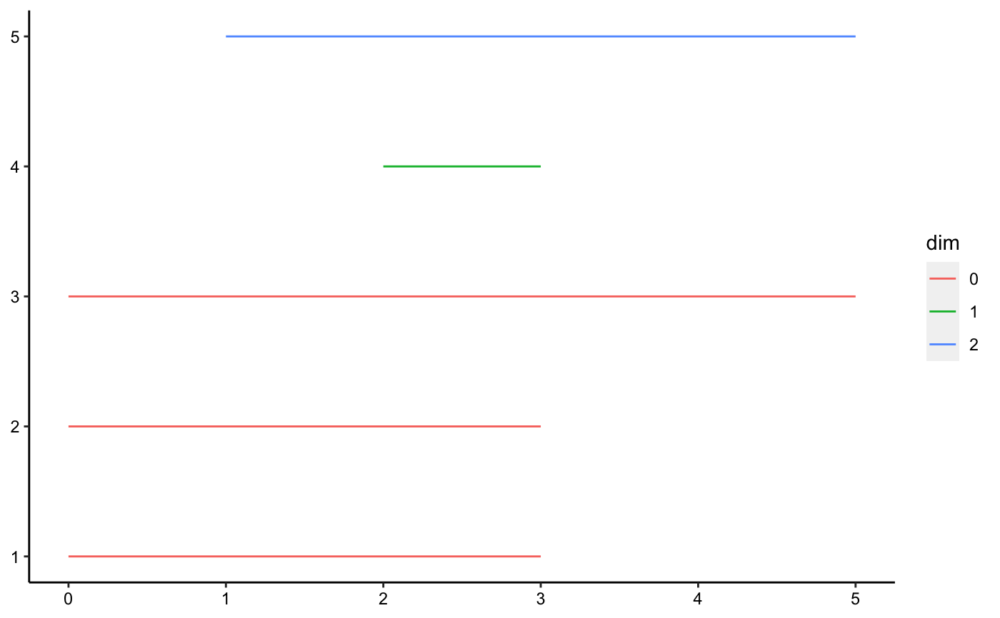
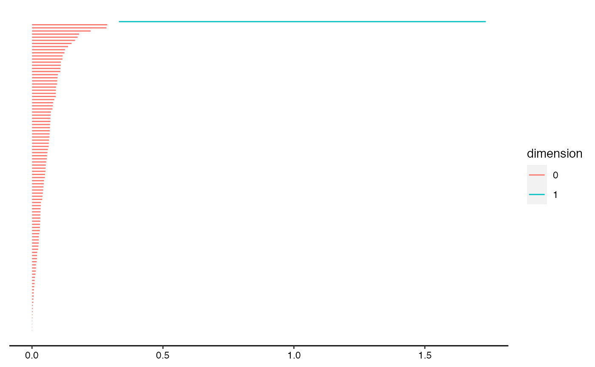

Visualize persistence data in a barcode diagram.
geom_barcode(
mapping = NULL,
data = NULL,
stat = "persistence",
position = "identity",
na.rm = FALSE,
show.legend = NA,
inherit.aes = TRUE,
...
)Set of aesthetic mappings created by aes(). If specified and
inherit.aes = TRUE (the default), it is combined with the default mapping
at the top level of the plot. You must supply mapping if there is no plot
mapping.
The data to be displayed in this layer. There are three options:
If NULL, the default, the data is inherited from the plot
data as specified in the call to ggplot().
A data.frame, or other object, will override the plot
data. All objects will be fortified to produce a data frame. See
fortify() for which variables will be created.
A function will be called with a single argument,
the plot data. The return value must be a data.frame, and
will be used as the layer data. A function can be created
from a formula (e.g. ~ head(.x, 10)).
The The statistical transformation to use on the data.
Defaults to identity; pass a string to override the default.
Position adjustment, either as a string naming the adjustment
(e.g. "jitter" to use position_jitter), or the result of a call to a
position adjustment function. Use the latter if you need to change the
settings of the adjustment.
Logical:
if FALSE, the default, NA lodes are not included;
if TRUE, NA lodes constitute a separate category,
plotted in grey (regardless of the color scheme).
logical. Should this layer be included in the legends?
NA, the default, includes if any aesthetics are mapped.
FALSE never includes, and TRUE always includes.
It can also be a named logical vector to finely select the aesthetics to
display.
If FALSE, overrides the default aesthetics,
rather than combining with them. This is most useful for helper functions
that define both data and aesthetics and shouldn't inherit behaviour from
the default plot specification, e.g. borders().
Additional arguments passed to ggplot2::layer().
Barcodes or barcode diagrams are vertical interval plots of persistence data.
Persistence data encode the values of an underlying parameter \(\epsilon\) at which topological features appear ("birth") and disappear ("death"). The difference between the birth and the death of a feature is called its persistence. Whereas topological features may be of different dimensions, persistence data sets usually also include the dimension of each feature.
ggtda expects persistence data to have at least three columns: birth, death, and dimension.
Barcodes traditionally extend along the horizontal axis and are arranged vertically in order of group (e.g. dimension) and birth. They may also be transposed and juxtaposed with persistence diagrams. While topological features of different dimensions are usually plotted together in persistence diagrams, barcodes often separate segments corresponding to features of different dimension, by vertical grouping or by faceting.
geom_barcode() understands the following aesthetics (required aesthetics are in bold):
start
end
alpha
colour
group
linetype
linewidth
Learn more about setting these aesthetics in vignette("ggplot2-specs", package = "ggplot2").
G Carlsson, A Zomorodian, A Collins, and L Guibas (2004) Persistence barcodes for shapes. Proceedings of the 2004 Eurographics/ACM SIGGRAPH symposium on Geometry processing, 124--135. doi:10.1145/1057432.1057449
G Carlsson (2014) Topological pattern recognition for point cloud data. Acta Numerica 23, 289--368. doi:10.1017/S0962492914000051
F Chazal and B Michel (2017) An introduction to Topological Data Analysis: fundamental and practical aspects for data scientists. https://arxiv.org/abs/1710.04019
ggplot2::layer() for additional arguments.
Other plot layers for persistence data:
landscape,
persistence
# toy example
toy.data <- data.frame(
appear = c(0, 0, 0, 1, 2),
disappear = c(5, 3, 3, 5, 3),
dim = c("0", "0", "0", "2", "1")
)
# topological barcode using the geom layer (and minimalist theme)
ggplot(toy.data,
aes(start = appear, end = disappear, colour = dim, shape = dim)) +
geom_barcode() +
theme_barcode()

# load library and dataset for comprehensive example
library("ripserr")
angles <- runif(100, 0, 2 * pi)
circle2d <- cbind(cos(angles), sin(angles)) # unit circle (Betti-1 number = 1)
# calculate persistence homology and format
circ.phom <- as.data.frame(vietoris_rips(circle2d))
circ.phom$dimension <- as.factor(circ.phom$dimension)
# pretty topological barcode with geom layer
ggplot(circ.phom, aes(start = birth, end = death,
colour = dimension)) +
geom_barcode() +
theme_barcode()
